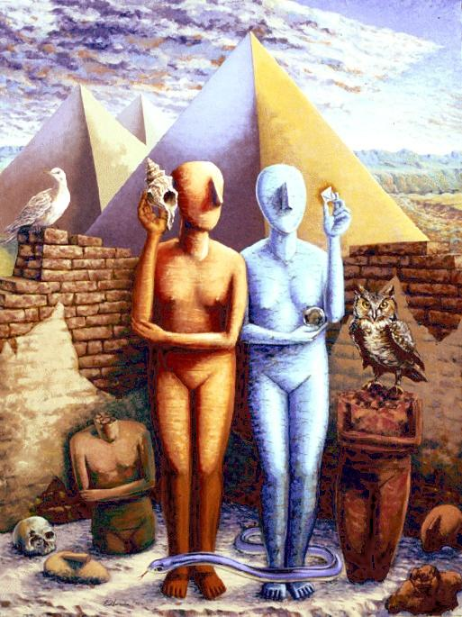

Created for the 10th Anniversary of Albuquerque TVI's Arts and Sciences Department
An allegory in painting is the use of objects and figures as symbols for ideas. There is a rich tradition of allegory in art. Its power to communicate depended on a shared understanding of common symbols. Today, in a civilization of divergent beliefs, one that emphasizes the matter of fact, the here and now, the artist may struggle to find symbols that have the power to communicate the essence of an idea.
These mannequin-like figures are based on the enigmatic Cycladic statues of the ancient Aegean (ca. 3000-1500 BC). Their faces lack any surviving features except for the prominent wedge-shaped nose. Here they are voiceless actors used to enact through blind gesture the two fundamental roles of the arts and sciences.
The azure figure, blind, studies a fluorite crystal, thus portraying the function of the sciences (astronomy, chemistry, biology, sociology, economics, etc.) to measure, describe and understand the universe, and its workings. She also holds a polished hematite sphere in which is reflected the artist at work --- a reminder of the essential artificiality of the imaginary world proposed by the painting.
The golden figure, deaf, is absorbed in the sound of the sea echoing through the conch. The sound is an illusion, a simulacra of the sea --- a symbol. Here the role of the arts (music, literature, philosophy, history, etc.) is portrayed. The arts seek to interpret and ascribe meaning to the world, humanity, its works, and even to existence itself.
The setting, stage-like, is a dream world where the monumental works of humankind serve as a backdrop. The landscape is a desert wilderness, walls crumble over time, a vacant-eyed skull --- a reminder of individual mortality --- serves a rodent as a nest (an apparent affront by nature against the conceit of individual pride); an owl perched atop a broken idol, coldly eyes the viewer and reminds of Athena's wisdom, science, and warrior skills; the dove, ancient symbol of peace and prosperity holds forth conscience, and hope; below a serpent variously symbolic of water and the generative powers of life, or of temptation and deceit, winds across the feet of the statues and binds together the arts and sciences.